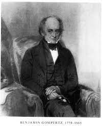

por Carlos Zamora
Es una modificación de la ecuación del modelo logístico llamada así por el matemático Benjamin Gompertz
\[\begin{aligned} \frac{dP}{dt} \qquad & = \quad kP \ln\left(\frac{A}{P}\right) \\ & = \quad kP(\ln(A) - \ln(P)) \end{aligned} \]
\[\begin{aligned} \qquad \quad \quad & = \quad P(k\ln(A) - k\ln(P)) \\ \end{aligned} \]
\[\begin{aligned} \frac{dP}{dt} \qquad & = \quad kP \ln\left(\frac{A}{P}\right) \\ & = \quad kP(\ln(A) - \ln(P)) \end{aligned} \]
\[\begin{aligned} \qquad & = \quad P(a - k\ln(P)) \\ \end{aligned} \]
\[\begin{aligned} \frac{dP}{dt} & = kP(\ln(A) - \ln(P)) \\ \end{aligned} \]
\[\begin{aligned} \frac{dP}{P(\ln(A) - \ln(P))} & = kdt \\ \end{aligned} \]
\[\begin{aligned} \int_{}^{} \frac{dP}{P(\ln(A) - \ln(P))} & = \int_{}^{} kdt \\ \end{aligned} \]
\[\begin{aligned} \qquad \qquad \qquad \quad \quad \quad & = kt + C \\ \end{aligned} \]
\[\begin{aligned} \int_{}^{} \frac{dP}{P(\ln(A) - \ln(P))} \\ \end{aligned} \]
Si denotamos:
\[\begin{aligned} \qquad \qquad u = \ln(A) - \ln(P) \\ \end{aligned} \]
\[\begin{aligned} du = - \frac{dP}{P} \\ \end{aligned} \]
\[\begin{aligned} \int_{}^{} \frac{dP}{P(\ln(A) - \ln(P))} & = - \int_{}^{} \frac{du}{u} \\ \end{aligned} \]
\[\begin{aligned} \qquad \qquad \qquad \qquad \quad = - \ln(u) \\ \end{aligned} \]
\[\begin{aligned} - \ln(u) & = kt + C \\ \end{aligned} \]
\[\begin{aligned} \quad \ln(u) & = -kt + C \\ \end{aligned} \]
\[\begin{aligned} \qquad \qquad \qquad u & = e^{-kt + C} \\ \end{aligned} \]
\[\begin{aligned} \ln(A) - \ln(P) & = Be^{-kt} \\ \end{aligned} \]
\[\begin{aligned} \ln(P) & = \ln(A) - Be^{-kt} \\ \end{aligned} \]
\[\begin{aligned} P & = e^{\ln(A) - Be^{-kt}} \\ & = e^{\ln(A)} e^{- Be^{-kt}} \end{aligned} \]
\[\begin{aligned} P(t) & = Ae^{- Be^{-kt}} \end{aligned} \]